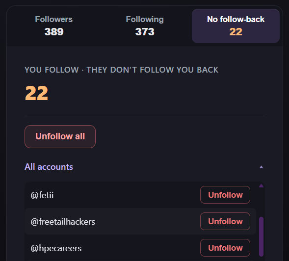

In-page analysis
Fetches run in the page context with your session. Keep instagram.com open and logged in in the tab you use for a run.
InstaCleanser is a Chrome extension that compares your Instagram followers and following in the same session as a normal instagram.com tab (your cookies, not a third-party login). On your profile you can unfollow one at a time or in bulk; on someone else’s, lists stay read-only so you do not change your following by mistake.
Personal project, built for fun — not affiliated with Meta or Instagram.
Everything runs against the active Instagram tab while you stay logged in. Large accounts take a while to analyze.
Fetches run in the page context with your session. Keep instagram.com open and logged in in the tab you use for a run.
After a run you get stats and three tabs: Followers, Following, and people you follow who do not follow you back.
Analyze another username for curiosity; unfollow controls stay off so you cannot unfollow from their profile view.
Chrome 114+ can dock the UI in the side panel while you switch tabs. Your last successful run lives in
chrome.storage and comes back when you reopen the popup or panel.
Real UI from the extension — dark layout with the same accent gradient as the toolbar UI.


Use Google Chrome or Microsoft Edge (Chromium), 114+ if you want the optional side panel.
Install from the InstaCleanser listing (same extension as below; updates arrive automatically).
chrome://extensions (Chrome) or edge://extensions (Edge).manifest.json).
Usage: open Instagram in a normal tab and log in, click the InstaCleanser icon, enter a username (yours or someone else’s), then Run analysis. Use Side panel if you want the UI to stay open when you click away from the popup.
Instagram does not offer a public API for this workflow. The extension uses the same undocumented endpoints the website uses; behavior may change. Use unfollow features responsibly and at your own risk.
Instagram limits unfollow requests. If you see a 400 error, wait before trying again.